July 4, 2004
| We were invited to the ranch of Charles Hefner,
one of Eric's co-workers, for their annual 4th of July celebration.
It is a party on an amazing scale - there are tons of activities, people,
food, and entertainment. A great time was had by all. |
|
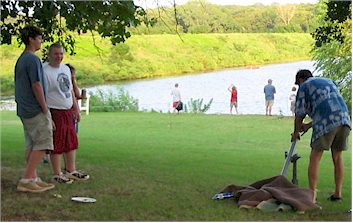 |
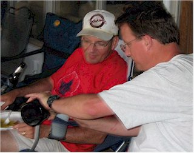 |
| Here Cliff Hannoch loads the potato gun while the onlookers move back in search of safety. |
Here Charles shares some homemade beer that was brought to the party. |
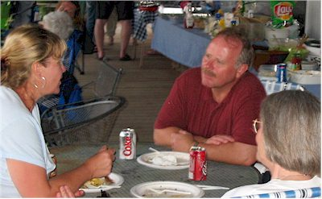 |
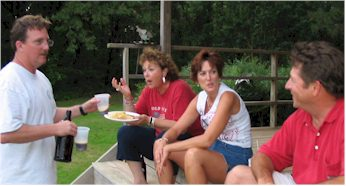 |
| Christy Hefner chatting with guests | Is it just me or does it look like everyone is talking at once?!1 |
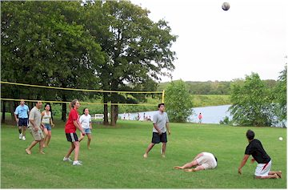 |
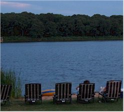 |
| Volleyball, kayaking, boating, fishing, and 4-wheeling were just a few of the activities offered. |
However, this was where I spent a significant portion of my time - it was a great spot! |
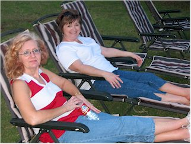 |
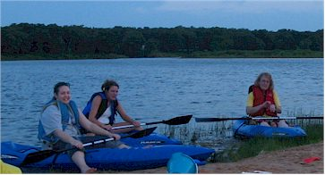 |
| Here are my buddies in relaxation. | Kathy and two of the Hannoch girls back from a kayak trip |
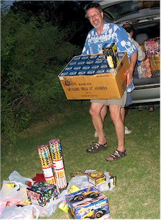 |
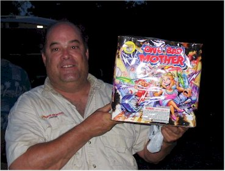 Here Jim shows off the grand finale, "One Bad Mother" I don't name the things folks, I just report it. |
| Cliff, unloading the fireworks and probably hurting himself. It was quite an arsenal! |
|
|
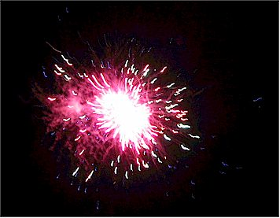 |
One of the many impressive fireworks from the show that evening. Thanks Charles! |